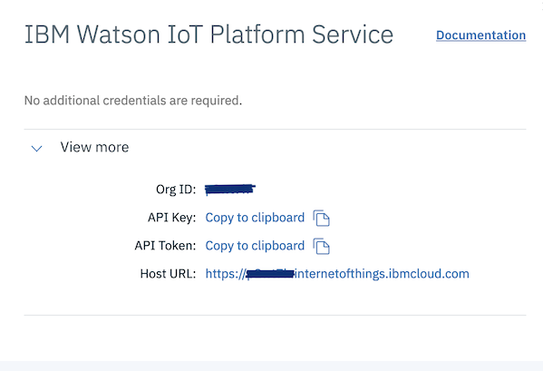
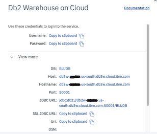

Connection Configuration
The connection.json is a JSON file that allows you to define the connection related
configuration item. The location of this file is <InstallRoot>/ibm/masdc/volume/config/connection.json.
The conneection configuration items are specified in three json objects:
configuration file to specify configuration items:
{
"scada": {},
"wiotp": {},
"datalake": {}
}
scada: Configuration items used to connect to SCADA hostorian to extract device datawiotp: Configuration items used to connect to Watson IoT Platform Servicedatalake: Configuration items used to connect to Watson IoT Platform Data Lake to upload device data
Configuration Object "scada"
The scada configuration object is required. The configuration items specified in this object is used
to connect to SCADA historian to extract data and create a csv file in /mnt/volume/data/csv directory.
The data from the csv is transformed and mappped in a format required to configure Watson IoT Platform
service and upload data in Watson IoT Plateform data lake.
To configure scada object, details of configured database in SCADA historian are needed.
Specify the following configuration items in scada configuration object:
dbtype: Database server configured as SCADA hostorian. The valid values are sqlserver, mysql and none.host: Database server host name.port: Database server listener port number.database: Database name.schema: Schema name.user: User name.password: Passwordssl: Enable ssl. The valid options are true and false.
Note: If dbtype is none, connector can not be configured to automatically extract data from
SCADA historian. Users will have to provice an option to extract data from historian and create
a csv file in
Configuration Object "wiotp"
The wiotp configuration object is required. The configuration items are used to reegister device
type and devices in your Watson IoT Platform service, and create physical and logical interfaces,
based on device data extracted from SCADA historian, and device data tranformation and mapping configuration
specified for the entity type. For device data tranformation and mapping configuration, refer to
Entity Type Configuration section.
To configure wiotp object, yoou need WIoTP organiization id, API key and token.
You can get these information using WIoTP dashboard:
Usage -> Watson IoT Platform Service -> View Details

Configuration items in wiotp configuration object:
orgId: Specifies a six character organization Id assigned to your Watson IoT Platform service.key: Specifies API Key.token: Specifies API Token.
Configuration Object "datalake"
This configuration object is required. The configuration items specified in this object are uused to
connect to the configured data lake in WIoTP and upload device data. To configure datalake object,
details of configured data lake in WIoTP are needed. You can get the data lake details using WIoTP dashboard.
For example if data lake is Db2 Warehouse on Cloud, you can get details using:
Usage -> Db2 Warehouse on Cloud -> View Details

Specify the following configuration items in datalake configuration object:
dbtype: Database server configured as Data Lake in Watson IoT Platform. The supported values are Db2Warehouse and PostGres.host: Database server host name.port: Database server listener port number.schema: Schema name.user: User name.password: Password
Sample connection.json Configuration File
{
"scada": {
"dbtype": "sqlserver",
"host": "172.17.0.3",
"port": "3306",
"database": "msdb",
"schema": "dbo",
"user": "xxxxxx",
"password": "xxxxxxxxxx",
"ssl": "false"
},
"wiotp": {
"orgId": "xxxxxx",
"key": "a-xxxxxx-xxxxxxxxxx",
"token" : "xxxxxxxxxxxx"
},
"datalake": {
"dbtype": "Db2Warehouse",
"host": "db2w-xxxxxxx.us-south.db2w.cloud.ibm.com",
"port": "5001",
"schema": "BLUADMIN",
"user": "bluadmin",
"password": "9_XXXXXXXXXXXXXXXXXXXX"
}
}